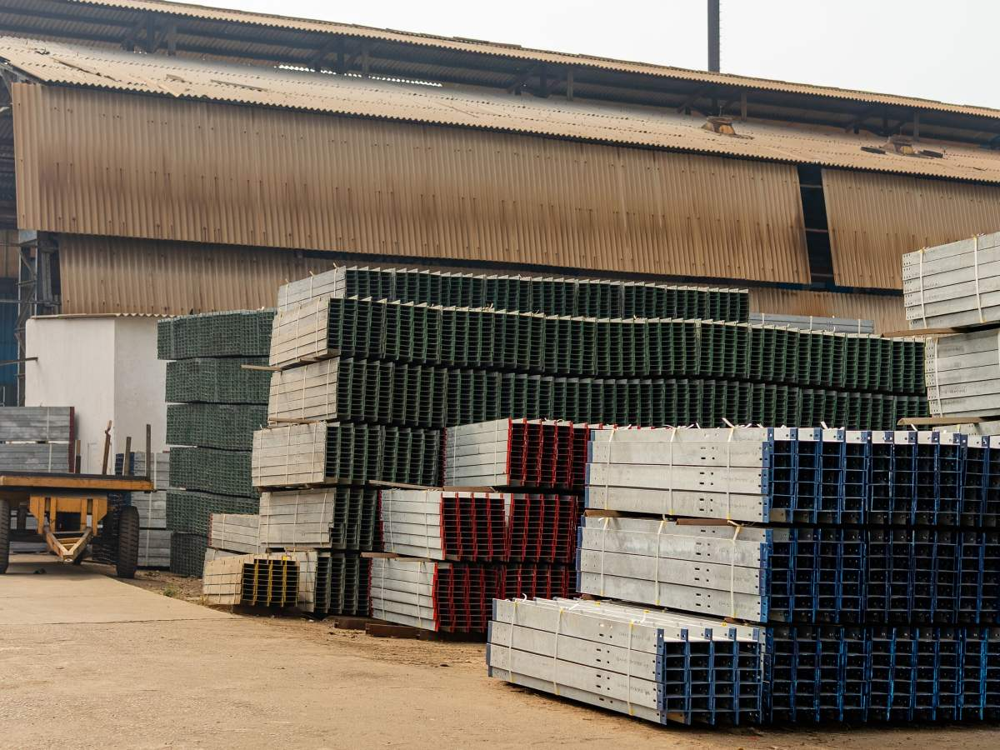
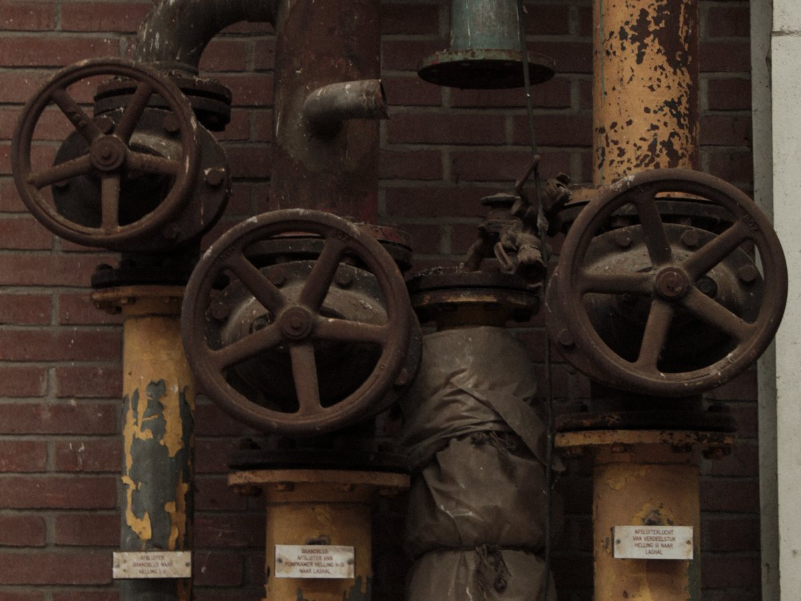
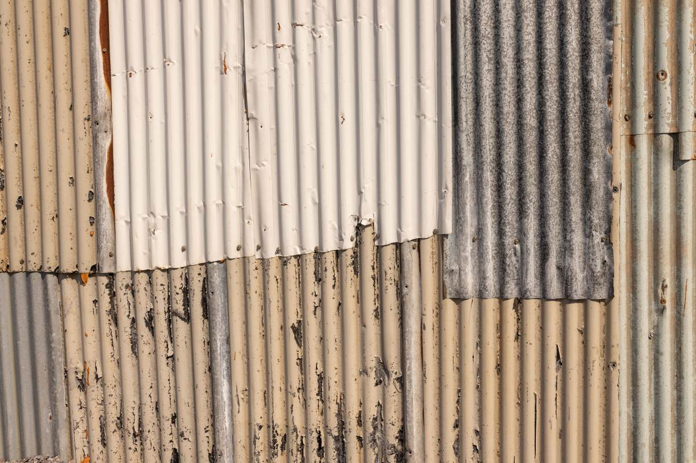
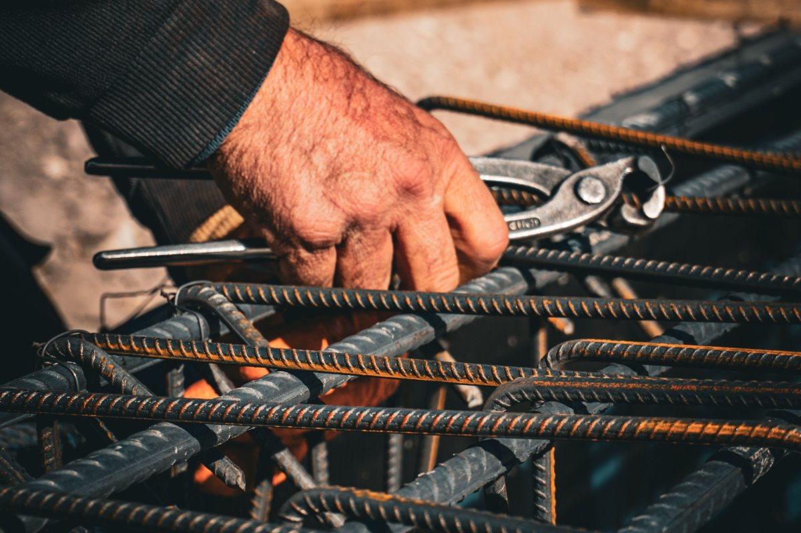

Villarrica · Ernesto Wagner 977
Fierro para la obra, desde 2013.
Venta de metales al por mayor en Villarrica.
- 141reseñas en Google
- 4,6de nota promedio
- 2013inicio de actividades
- 0teléfonos en su ficha: tampoco web
Antes de ir
¿Cómo cotizo?
Con la lista escrita, la compra sale en una vuelta.
- DIÁMETRO
El grosor
En milímetros: 8, 10, 12…
- LARGO
Cuántos metros
O cuántas barras enteras.
- CANTIDAD
Cuántas
Sume un poco para los traslapos.
- RETIRO
Cómo se lleva
Pregunte por el despacho.
El stock y los cortes los confirma el local.
Fierro, al por mayor.
En Ernesto Wagner 977
El local, día por día
-
Lo que la distingue
Al por mayor
Metales para la obra.
-

Su giro
Desde 2013
Venta de metales en Villarrica.
-
Lun, mar, jue y vie
Mañana y tarde
De 9 a 13 y de 15 a 19.
-
El miércoles
Sólo en la tarde
De 15 a 19.
-

El sábado
Sólo en la mañana
De 9 a 13.
-
Domingo
Cerrado
Vuelva el lunes.
Horario de su ficha en guías en línea; giro del registro tributario.
141 reseñas y un 4,6.
Ernesto Wagner 977
Barra, chispa y bodega
Un día en el local


Fotos de referencia: ninguna es del local.
Dónde estamos
Ernesto Wagner 977, Villarrica
- Dirección
- Ernesto Wagner 977
- Lunes a viernes
- 9–13 y 15–19 (miércoles sólo 15–19)
- Sábado
- 9–13
- Razón social
- Comercial Flores Ltda.
Su ficha de Google no tiene teléfono: hoy la dirección es el único contacto.
Ernesto Wagner 977, Villarrica Abrir en Google Maps
Para el dueño
Qué es real y qué falta
Lo verificado
Dirección, horario, el giro desde 2013 y las 141 reseñas.
Lo de ejemplo
Cómo armar la lista y las fotos.
Lo que falta
Un teléfono o WhatsApp en su ficha, qué medidas tienen en stock y si despachan.